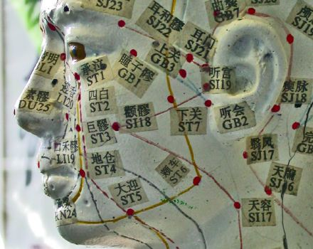

Accupuncture & Fertility
Modern-day stork or painful pipedream?
Stella Yujin Kim
Spring 2007

Most little girls dream of meeting “Prince Charming,” getting married,
and having children of their own. For many infertile women, however,
this coveted ideal may prove impossible. Recently, acupuncture has been
suggested to significantly improve pregnancy rates among infertile
women. However, one must question whether this is a valid form of
treatment or a medical uncertainty that deceives women into harboring
false hopes.
Acupuncture as an effective infertility treatment
has been studied by a number of researchers in the new millennium. In
the April 2002 issue of Fertility and Sterility, Wolfgang E. Paulus,
MD, and his colleagues at the Christian-Lauritzen Institute of Germany
reported that acupuncture might be a useful tool for improving the rate
of pregnancy following assisted reproductive therapy. In their study,
160 patients who were planning on receiving reproductive therapy were
divided into two groups: one treated with acupuncture and one without.
The experimental group received acupuncture 25 minutes before and after
embryo transfer, while the other group served as a control. Six weeks
after the transfer, 42.5 percent of the acupuncture group had become
pregnant, compared to only 26.3 percent of the control. Lars G.
Westergaard, MD, PhD, of the Fertility Clinic Trianglen in Denmark
replicated these findings in January 2005 in a group of more than 350
patients. He concluded that acupuncture treatment given no later than
two days after the embryo transfer maximizes pregnancy potential.
Why does acupuncture seem to work? Answers are
controversial. Raymond Chang, MD, of the Institute of East-West
Medicine in New York, asserts in a December 2002 Fertility and
Sterility article that infertility may be the result of unnatural
blockage of blood flow in the uterus, fallopian tubes, or other parts
of the female reproductive organ. Such blockages can be caused by a
lack of exercise, poor diet, or self-induced stress. Chang claims that
acupuncture remedies the situation by unblocking blood vessels and
inducing a healthy flow of blood. According to him, it can also
stimulate certain neuropeptide glands in the central nervous system,
increasing the secretion of hormones such as follicle stimulating
hormone, which are crucial for the proper functioning of the menstrual
cycle.
Mike Berkley, the Director of the Berkley Center for
Reproductive Wellness and Complementary Medicine in New York, proposes
another explanation for acupuncture’s effectiveness for infertile
females. Ninety percent of his patients are women age 39 or older, and
many of his patients have already received some form of fertility
treatment. “For most of our patients, we are the last stop before they
consider adoption or donor egg implantation,” he says. He claims his
acupuncture therapy is successful because it reduces stress that makes
women unable to conceive. He believes that acupuncture can treat the
frustrated, emotional state of a woman. Berkley’s main goal is to
create a healthy environment suited for a woman’s particular age. His
strategies include regulating a woman’s period, enhancing the thickness
of the uterine lining, and eliminating pre- menstrual symptoms. These
objectives are achieved by stimulating the flow of hormones in the
woman’s body through the use of acupuncture.
Jennifer Moss, MS, of Moss Acupuncture, a Chinese
medicine and alternative medicine clinic in San Francisco, also treats
women who are trying to conceive. Her view of their situation is
optimistic. Her hope is based on the belief that human bodies were
designed with the singular goal of reproduction in mind. Her clinic
subscribes to the Traditional Chinese Medicine (TCM) theory that one’s
inability to conceive results from an unnatural balance of the body. It
holds that infertility is simply a shift from one’s optimum
reproductive health. This imbalance can be measured by pulse rate,
health history, and physiology of the tongue. Then, using a combination
of acupuncture and herbal medicine treatments, the body can be brought
back to optimum balance. This type of therapy is effective with minor
side effects because it is free of synthetic chemicals and is also
non-invasive. Moss recommends TCM therapies for couples undergoing in
vitro fertilization and other assisted reproductive therapies to create
the greatest possibilities for success.